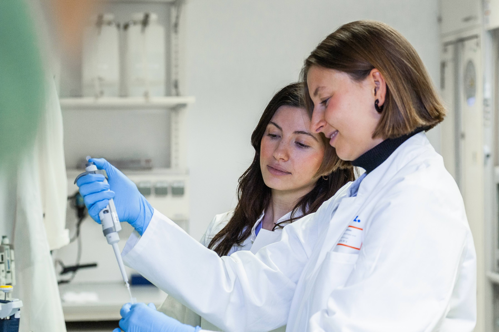

We train scientists to think mechanistically about immune regulation in complex human tissues. Our work integrates systems immunology, spatial proteomics, and metabolic modeling with a strong focus on human cancer and translational relevance.
Trainees in the lab work on clinically grounded questions such as: How do metabolic niches shape immune cell fate? How do tumor and stromal interactions reprogram immune metabolism? Which spatially organized metabolic states predict response to immunotherapy?
To address these questions, lab members are trained across complementary experimental and computational platforms:
Our organoid platform enables trainees to move from descriptive spatial profiling in patient tissues to mechanistic perturbation experiments in genetically controlled, three-dimensional human tumor models, and to test how metabolic interventions alter immune function.
Close integration with clinical collaborators within the NCT and DKTK network provides access to well-annotated patient cohorts and translational endpoints. Projects frequently combine large clinical sample sets with controlled experimental systems, fostering a bidirectional exchange between discovery and validation
We emphasize conceptual clarity, quantitative rigor, and scientific independence. Trainees are expected to design hypothesis-driven studies, engage deeply with computational analysis, and contribute to the development of new technologies and analytical frameworks.
Alumni from the lab have transitioned to competitive doctoral positions at leading research institutions in Paris, Stockholm, Bonn, and Berlin.